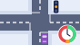

Every workflow › Scenario editor › Junctions

Junctions · Signals
Signal timing
Set how long each light at a junction stays green.
The run shows the queue on every approach.
0:455 stepsFilmed 2 Oct 2026

Set how long each light at a junction stays green.
The run shows the queue on every approach.